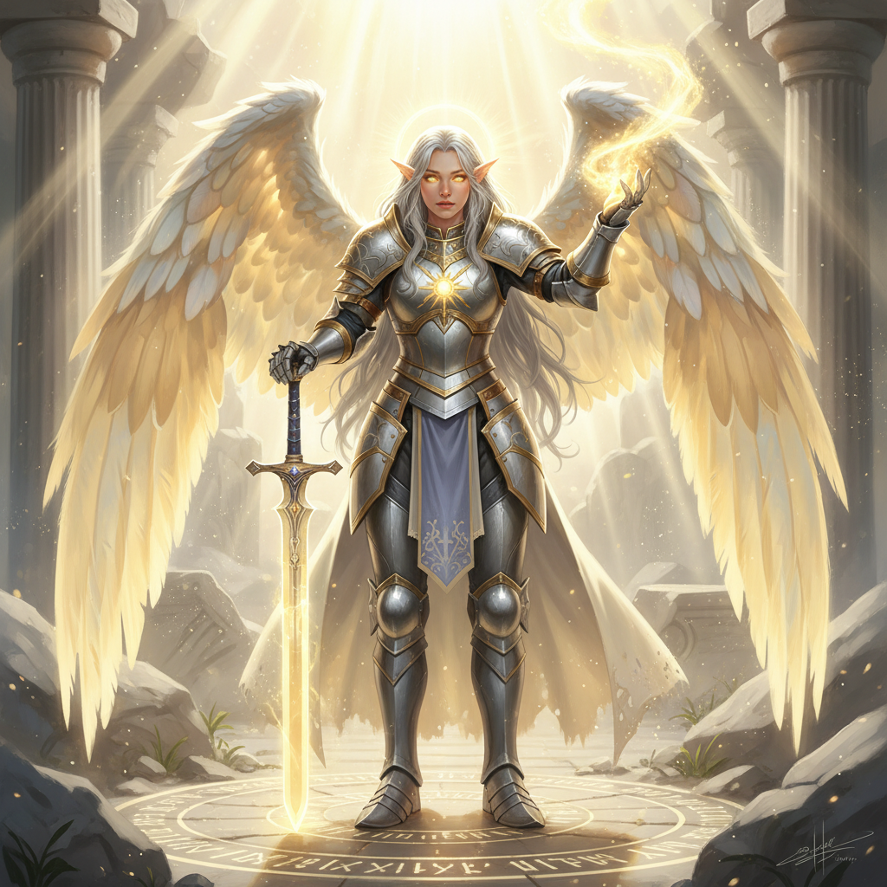
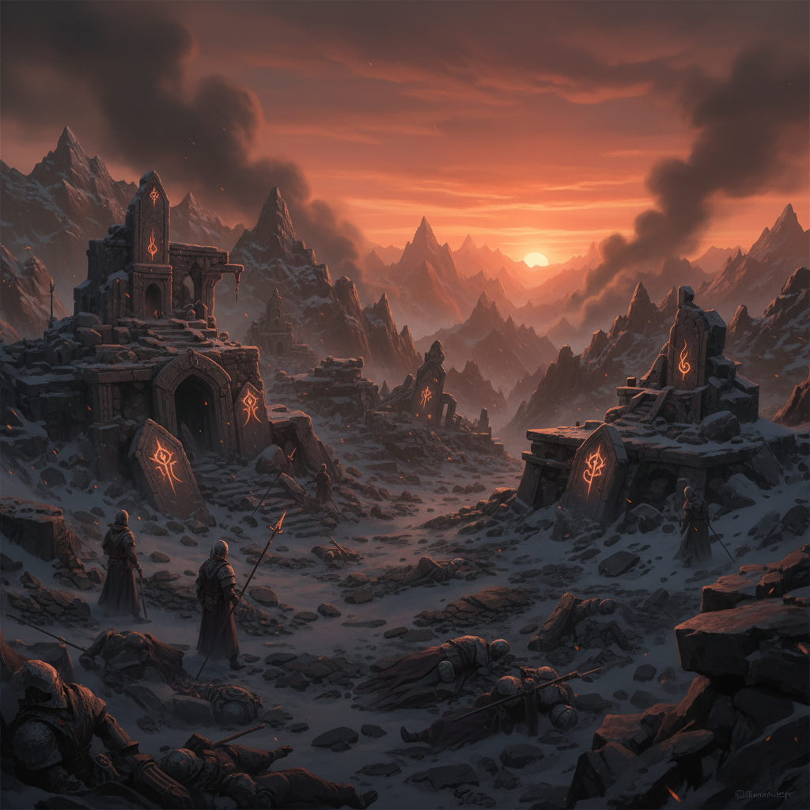
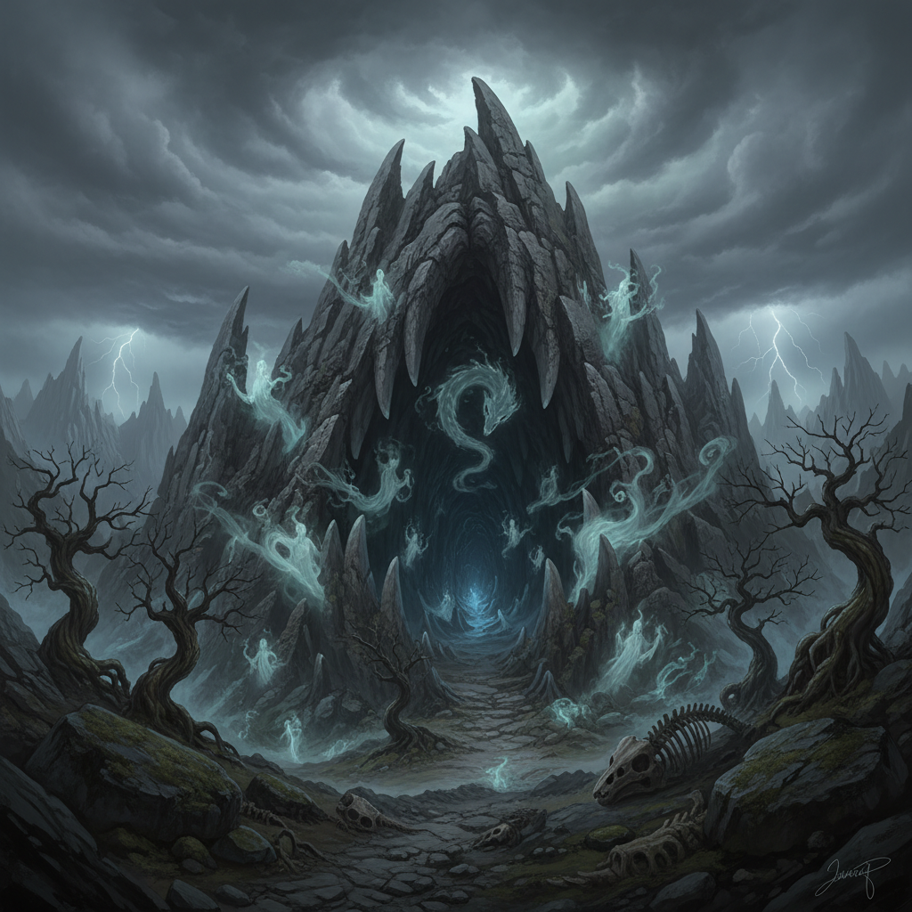
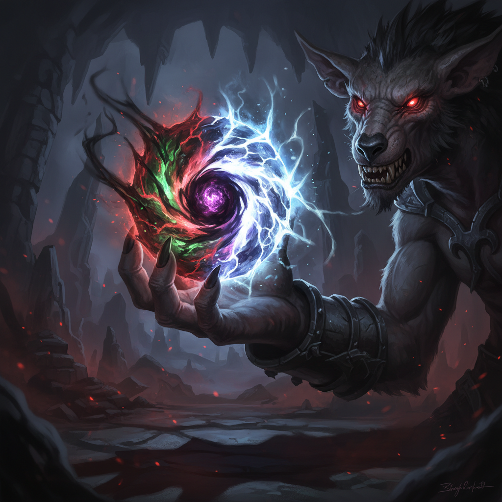

⚔️ The Quest of Lyra Stormblade ⚔️

Lyra Stormblade, Aasimar Paladin of Pelor
The Champion
Okay, here's a D&D 5e character designed to be epic and cinematic.
**1. Name and Race:**
* Name: Lyra Stormblade
* Race: Aasimar (Protector Aasimar)
**2. Class and Level:**
* Class: Paladin (Oath of Devotion)
* Level: 5
**3. Background Story:**
Lyra was raised in a secluded monastery nestled high in the Silverpeak Mountains. The monks of the Order of the Silver Flame were dedicated to the god of light and justice, Pelor. Lyra, blessed with celestial heritage, was seen as a chosen one from a young age. She was trained rigorously in the arts of combat, healing, and the tenets of her deity. From her youth, she had visions and dreams, whispers from her celestial guide, a powerful Deva named Astraea, guiding her toward acts of righteous service. Astraea showed her visions of a loo...
The Monastery Falls
The air crackled with the stench of blood and burnt incense. The monastery, once a beacon of light,
lay in ruins. The monks who raised Lyra were gone, and the sacred Sunstone stolen by demonic gnolls...

The ruins of the Silverpeak monastery
The Quest
The whispers started subtly, a nagging unease that settled deep in Lyra's celestial soul. At first, she dismissed them as residual grief from the monastery's destruction, a constant reminder of her failure. But Astraea, her celestial guide, confirmed her fears: the corruption emanating from the Sunstone was spreading, tainting the very land around it. The gnolls, emboldened by its dark power, have established a stronghold deep within the Whispering Caves, a labyrinthine network carved into the jagged peaks of the Dragon's Tooth mountains, a day's ride east of the destroyed Monastery.
The whispers grew louder, and Lyra, in meditation, witnessed a horrifying vision: the gnoll Flind, fueled by the Sunstone's corruption, performing a ritual to summon a powerful demon lord. The ritual would transform the Whispering Caves into a permanent portal, unleashing a tide of demonic forces upon the land. Astraea's warning was stark: if the ritual is completed, the entire region will be plunged into darkness, and the light of Pelor will be snuffed out forever. The monks of a nearby temple of Pelor intercepted a messenger from the same Flind, talking about bringing more Sunstones to Dragon's Tooth mountains.
Urgency gnaws at Lyra. She must reach the Whispering Caves before the ritual reaches its zenith. The fate of the region, perhaps even the world, hangs in the balance. The Whispering Caves themselves are rumored to be haunted by ancient spirits and riddled with treacherous traps, designed to protect a long-lost civilization. Navigating its treacherous depths, battling the gnoll horde, and ultimately confronting the demon-empowered Flind, all while racing against the clock, presents a challenge that will test Lyra's faith, courage, and the very limits of her celestial power. The light is fading, and only Lyra Stormblade can reignite it.
Into the Whispering Caves
The wind howls a mournful dirge through the shattered peaks of the Silverpeak Mountains, a constant lament echoing the hollowness in your chest. You grip the hilt of your sun-etched longsword, the chill of the steel a stark contrast to the burning ember of devotion that still flickers within you. The monastery, once a beacon of light and hope, is now a jagged scar against the skyline, a testament to your failure.
Astraea, your celestial guide, shimmers into existence beside you, her voice a gentle chime against the shrieking wind. "The corruption festers, Lyra," she whispers, her ethereal form flickering with concern. You feel it too, a creeping darkness that taints the very air you breathe. The land itself recoils from it, the vibrant green meadows withering into sickly brown patches.
The Whispering Caves beckon, a gaping maw in the earth swallowing the last vestiges of light. The air grows thick with the stench of decay and feral musk as you approach. Gnolls. Astraea's words echo in your mind: *Sunstone...dark power...stronghold*. You draw a ragged breath, the scent of ozone and something ancient, something utterly profane, stinging your nostrils. You can almost *taste* the corruption, a metallic tang that clings to the back of your throat.
The first snarl rips through the silence. A pair of glowing, malevolent eyes pierce the gloom at the mouth of the cave. You steel your resolve, channeling the power of Pelor, feeling the familiar warmth spread through your veins. Your longsword hums with divine energy, the metal shimmering with a faint, golden light. The gnoll lunges. You are Lyra Stormblade, paladin of light, and this is where you make your stand.

The entrance to the Whispering Caves
The Corrupted Relic
Deep within the caves, the Sunstone pulses with corrupted power. The gnoll Flind prepares the ritual
to summon a demon lord. Time is running out. Lyra must act now or lose everything...

The corrupted Sunstone
To Be Continued...
Will Lyra recover the Sunstone? Can she stop the demon lord's summoning?
The fate of the realm hangs in the balance...
🎲 Generated with AI-DnD • Powered by Gemini 2.0 Flash 🎲